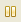
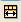
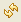

From RTSC-Pedia
 | [printable version] [offline version] | offline version generated on 02-Oct-2009 22:10 UTC |
Runtime Object Viewer
Using ROV for Eclipse-Based Debugging
The Runtime Object Viewer (ROV) is a debugging tool you can use with applications that make use of RTSC content in CCStudio 4. This viewer provides state information about all the RTSC modules in the application. ROV is a stop-mode debugging tool, which means it can receive data about an application only when the target is halted, not when it is running. ROV provides data at stop points even if you have disabled RTDX in your application. In contrast, the Real-Time Analysis (RTA) tools require RTDX.
Contents |
If you are in a CCSv4 project debug session, ROV automatically gets paths to packages from your CCSv4 project.
Opening ROV
To open ROV, follow these steps:- Load your application for debugging. If you are using a multi-core device, select the device you want to debug before opening ROV.
- Choose Tools > ROV from the CCSv4 menus. This opens the ROV area in the Debug perspective. (You can open ROV at any time while you have an application loaded.)
- In the left pane of the ROV tool, select a module from the expandable tree (see figure) of RTSC packages used by the application.
- In the right pane of the ROV tool, select one of the tabs. (The "ROV tabs" vary depending on the module you select.)
- Halt the target or run to a breakpoint. Fresh data will be loaded from the target to the ROV display.
Viewing Data with ROV
The left side of the ROV GUI displays the modules in the application, organized as a tree according to the package hierarchy. Double-clicking a module in the tree shows its state information on the right side.
When you click on a module or tab in ROV, you see the "Acquiring data..." message while ROV retrieves and processes information. If you switch to a different tab or module, ROV cancels the previous data request and begins a new one. Data for non-selected tabs is not loaded in the background when you switch tabs or modules.
When you reload or rerun the application, ROV clears all of its cached data.
When the application halts at a breakpoint, ROV refreshes only the currently displayed information. If any data has changed since the last time ROV requested that particular data, ROV displays that data in red text. Keep in mind, however, that ROV only retrieves data when it is requested. If ROV did not get an item at the last breakpoint, it has nothing to compare it to at the current breakpoint. In short, if a field is not red, this does not necessarily mean that the data did not change.
While the target is running, you may continue to explore ROV. Any data that was retrieved at the last breakpoint is shown in gray text. If data was not retrieved you see a "Target running..." message that indicates that ROV cannot retrieve new data while the target is running.
ROV highlights errors by making the background red . Hover your mouse over a field with a red background to see the error message.
ROV can detect the following types of errors.
- Validation errors. RTSC modules can provide validation of information ROV receives from the target. For example, a particular structure field can have a maximum value of 32. If the value on the target is 33, the module can report this as a problem.
- Memory. ROV may report bad memory accesses or other detectable problems.
- ROV errors. ROV reports standard exceptions if a corrupted data from the target causes ROV-related code in a module to behave incorrectly.
ROV tabs
ROV can show state information for every module in an application that maintains a state. All modules have at least a "Raw" tab. Other modules may have additional tabs, such as "Basic", "Detailed", and "Module". These additional tabs are implemented by the module writer to provide different views into the data.
For details about the data available in ROV for a particular module, refer to the online help for that module.
Raw tab
All modules have a "Raw" tab that displays unprocessed data from the target.
The "Raw" tab has expandable items for the module's state structure, any instances' state structures, and the configuration properties for the module.
When you expand the "Module State" node, you see variables owned by the module along with their values. Structures with multiple fields can be further expanded to view their values.
When you expand the "Instance States" node, you see a list of instances that have been created for that module. Statically-created instances have the name you gave them when you configured them. Dynamically-created instances have an address value as the name.
When you expand the "Configuration node, you see a list of configuration properties for the module. Expanding the node for an instance also shows a list of configuration properties for the instance. The values of these properties may have been set statically, and may be changed programmatically at run-time.
Use the  icon to pause updates to the ROV tool so that new values are not downloaded automatically at the next breakpoint.
Use the  icon to fit the columns in the ROV to best fit their contents.
Use the  icon to get the current data from the target.
Basic and Detailed tabs
The "Basic" and "Detailed" tabs contain state information about the selected module's instances. Each row of the table represents an instance of the module. ROV tabs that contain instance information always have the instance's address (the address of the instance's state structure) in the first column.
The following example shows the Detailed tab for the DSP/BIOS Task module.
The "Basic" and "Detailed" tabs contain largely the same information. The "Detailed" tab generally provides detailed information that may require longer processing time. If you do not need the extra information in the "Detailed" tab, you may use the "Basic" tab for somewhat quicker response times.
Module tab
The "Module" tab presents module state information. It has only one row, which represents the module's state object.
Data tab
Some modules have a "Data" tab. This tab displays tables of data associated with the instances managed by a module. A good example is a memory heap. The data tab for a memory heap module could show all the heap's allocable memory blocks.
A data tab may have a name other than "Data" to describe the data it displays, such as "Records" or "Blocks".
A "Data" tab lists the module's instances on the left. Expanding an instance shows a list of all of the data elements. Selecting one or more data elements on the left shows details about them on the right. You can select all the elements in an instance by clicking the first element, holding down the Shift key, and clicking the last element.
See also
| RTSC+CCStudio v4 QuickStart | Using CCStudio v4 to create, build, and debug RTSC projects |
| RTSC+Eclipse FAQs | Using RTSC with Eclipse-Based Tools |
| XGCONF User's Guide | Using the RTSC Graphical Configuration Tool in CCSv4 |
| [printable version] [offline version] | offline version generated on 02-Oct-2009 22:10 UTC |

{kind=link}
{kind=link}
{kind=link}
{kind=link}
{kind=link}
{kind=link}
{kind=link}
{kind=link}
{kind=link}
{kind=link}
{kind=link}
{kind=link}